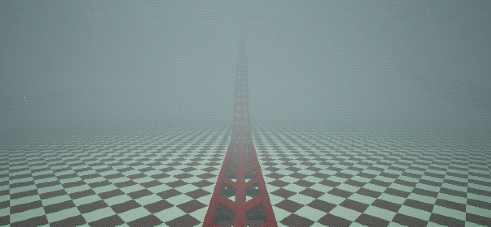
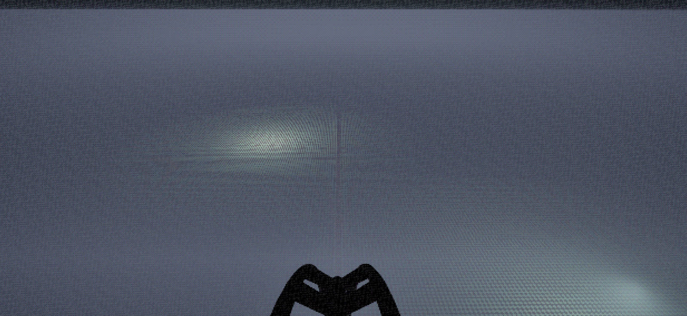

Have you ever sat alone on a roller coaster,waiting for it to start,wishing you could still get off?


credits
A multisensory VR experience about a nightmare.
A spin-off of the game Never Been Easier.
three to four minutes sight, sound, wind and vibration made in Unreal Engine